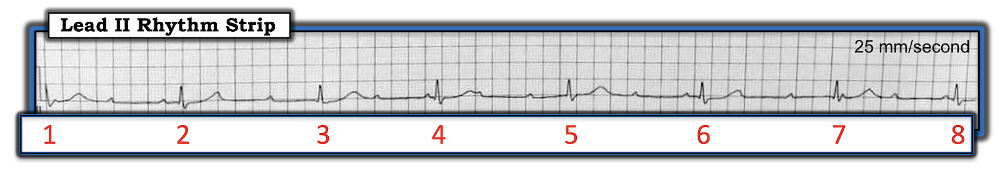
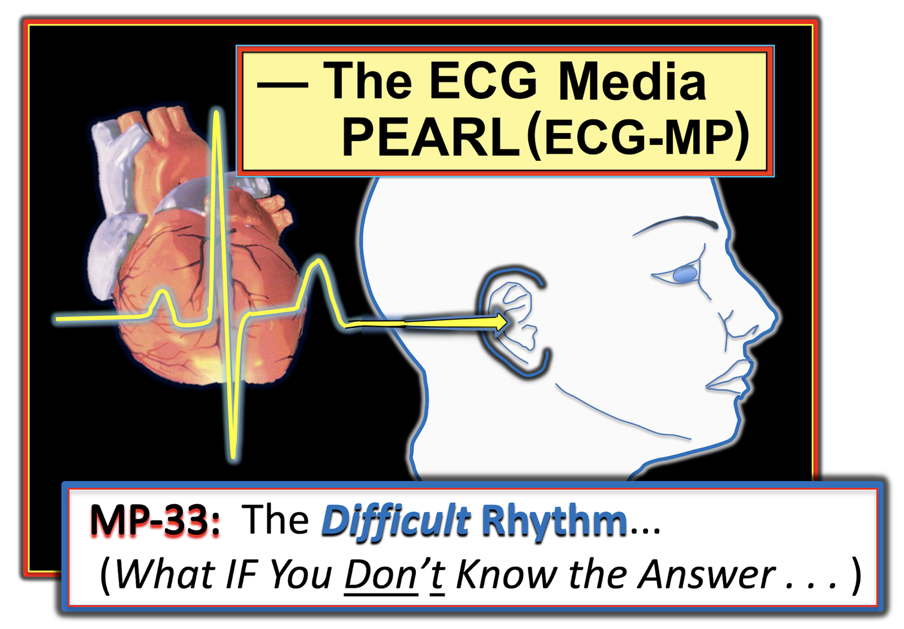
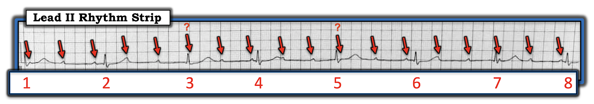
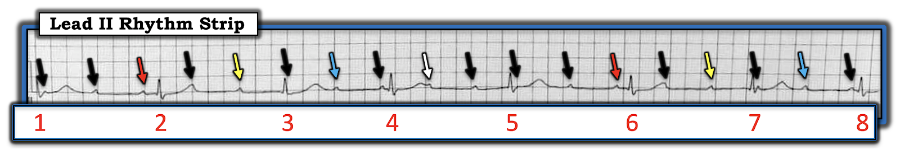
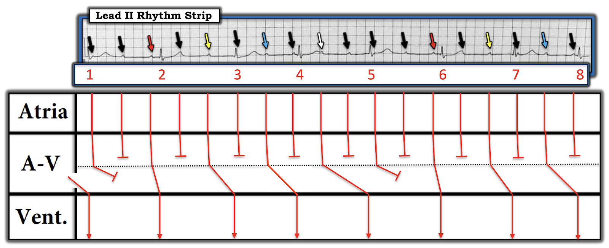

ECG Blog #216 (ECG MP-33) — Blốc AV có hoàn toàn không?
XIN LƯU Ý: Trước khi bắt đầu — có những bài học cần rút ra từ bản ghi này. Dù tôi đã nhận ra ngay rối loạn dẫn truyền cơ bản khi bản ghi này lần đầu được gửi tới tôi — nhưng phải vài tháng sau (khi tôi đang soạn bài ECG Blog này) — tôi mới nhận ra rằng cách diễn giải ban đầu của mình là không đúng.
- Tất cả chúng ta đều sống và học hỏi mỗi ngày!
- Đây là một bản ghi đầy thử thách! BẠN đã sẵn sàng nhận thử thách chưa? (LƯU Ý: Ngay cả khi bạn không diễn giải được trọn vẹn bản ghi này — Vẫn còn RẤT NHIỀU điều để học.).
================================
Dải nhịp chuyển đạo II dài ở Hình-1 được ghi từ một người đàn ông 65 tuổi đến khám sức khỏe “định kỳ”. Khi nghe tim phát hiện nhịp tim chậm và không đều — nên đã được chỉ định ghi điện tâm đồ. Bản ghi 12 chuyển đạo cho thấy RBBB không hoàn toàn — nhưng không có thay đổi cấp tính.
CÂU HỎI: Bạn sẽ diễn giải nhịp ở Hình-1 như thế nào?
- Có blốc AV hoàn toàn (tức là, độ 3) không?


=======================================
LƯU Ý #1: Đến đây, một số độc giả có thể muốn nghe ECG Audio PEARL dài 7:00 phút trước khi đọc Suy nghĩ của tôi về điện tâm đồ ở Hình-1. Bạn có thể xem Suy nghĩ của tôi về bản ghi này vào bất cứ lúc nào (nằm bên dưới ECG MP-31).
=======================================


Hôm nay là ECG Media PEARL #33 (7:00 phút Audio) — Bàn về việc nên làm gì khi bạn không chắc chắn về chẩn đoán nhịp. Điều này thực sự quan trọng thường xuyên đến mức nào?
SUY NGHĨ của tôi về Hình-1:
Bản ghi này hơi bị nghiêng — do đó có phần biến dạng. Dù vậy — tôi tin chất lượng bản ghi này vẫn đủ để đánh giá nhịp chính xác. Theo “Cách tiếp cận Ps, Qs & 3R” mà tôi ưa dùng (Đã ôn lại trong ECG Blog #185):
- Sóng P có hiện diện (Sẽ bàn chi tiết bên dưới!).
- Phức bộ QRS có thời gian ở mức giới hạn (tức là, khoảng 0.10 giây). Điều này phù hợp với RBBB không hoàn toàn đã thấy trên điện tâm đồ 12 chuyển đạo. Điểm MẤU CHỐT: Nhịp thấy ở Hình-1 là nhịp trên thất!
Về 3 R:
- Regularity (tính đều) của nhịp? — Khoảng R-R ở Hình-1 không đều (Regular)! (LƯU Ý: Đây là một nhận xét rất quan trọng — rằng khoảng R-R không đều!).
- Rate (tần số)? — Tần số của nhịp thất chậm. Vì khoảng R-R dao động từ 7 đến 8 ô lớn — tần số thất chỉ vừa trên 40 lần/phút.
- Related (liên quan)? (tức là, Có sóng P nào liên quan với các phức bộ QRS kế cận không?) — Đây là một Câu hỏi MẤU CHỐT khác. BẠN có nghĩ rằng bất kỳ sóng P nào ở Hình-1 liên quan với các phức bộ QRS kế cận không?
CÂU HỎI: Nhịp nhĩ ở Hình-1 có đều không?
- Câu trả lời của tôi có ở Hình-2.


TRẢ LỜI: Tôi tin rằng có một nhịp nhĩ đều với tần số ~100 lần/phút ở Hình-2 (các mũi tên ĐỎ).
- Tuy biên độ rất nhỏ, các sóng P xoang dương vẫn xuất hiện đều đặn trên dải nhịp chuyển đạo II này — ngoại trừ tại 2 vị trí mà tôi đã thêm dấu chấm hỏi ĐỎ.
- Vì các mũi tên tôi vẽ luôn cách đều nhau — thật hợp lý khi suy đoán rằng các sóng P xuất hiện đều đặn tiếp tục suốt toàn bộ dải nhịp (và gần như chắc chắn có 2 sóng P hiện diện và bị ẩn trong phức bộ QRS tại 2 vị trí tôi đặt dấu chấm hỏi).
- LƯU Ý: Nếu không phải như vậy — chúng ta sẽ phải giả định một dạng blốc xoang nhĩ (blốc SA) rất bất thường. Chuyện thường gặp thì thường gặp — và — Mọi thứ đơn giản hơn nhiều NẾU ta giả định rằng các sóng P xoang đều đặn tiếp tục suốt toàn bộ bản ghi (mặc dù ta không thấy dấu hiệu rõ ràng của 2 trong số 18 sóng P mà tôi tin là có mặt ở Hình-2).
ĐIỂM THEN CHỐT (PEARL) #1: Dùng compa đo (calipers) là thiết yếu để đánh giá các rối loạn nhịp phức tạp — đặc biệt là những nhịp blốc AV khó.
- Tôi luôn ngạc nhiên về việc bước đơn giản là đánh dấu sóng P đã giúp tôi nhiều đến thế nào trong việc hình dung dễ dàng hơn ngay cả những mối liên hệ P–QRS phức tạp (đó là lý do tôi đã thêm các mũi tên ĐỎ vào Hình-2).
ĐIỂM THEN CHỐT (PEARL) #2: Trừ một số ngoại lệ hiếm gặp, một MẤU CHỐT để nhận biết blốc AV độ 2 hoặc độ 3 — là nhịp nhĩ phải đều (hoặc ít nhất gần như đều).
- Nhận thức rằng nhịp nhĩ phải ít nhất tương đối đều khi có blốc AV độ 2 hoặc độ 3 — là điều quan trọng để loại trừ các tình trạng như khoảng ngưng xoang, ngưng xoang, blốc SA và PAC bị blốc như một nguyên nhân tiềm tàng của rối loạn nhịp.
- Vì vậy — Vì nhịp nhĩ ở Hình-2 là đều — và, vì rõ ràng nhiều sóng P được đánh dấu bằng các mũi tên ĐỎ không được dẫn truyền xuống thất (mặc dù có đủ cơ hội để được dẫn truyền) — nên đang có một dạng blốc AV độ 2 hoặc độ 3 nào đó.
CÂU HỎI MẤU CHỐT: Mức độ blốc AV ở Hình-2 có hoàn toàn không?
- GỢI Ý #1: Việc khoảng R-R không đều giúp trả lời câu hỏi này như thế nào?
- GỢI Ý #2: Hãy NHÌN lại tất cả các sóng P ở Hình-2. Có bất kỳ khoảng PR nào lặp lại không? (tức là, BẠN có thấy cùng một khoảng PR ở hơn 1 vị trí trong dải nhịp này không?).
ĐIỂM THEN CHỐT (PEARL) #3: Một MẤU CHỐT để nhận biết blốc AV độ 3 (tức là, hoàn toàn) — là trong đa số trường hợp, nhịp thất phải đều (hoặc ít nhất gần như đều). Lý do điều này đúng trong đa số trường hợp blốc AV hoàn toàn — là các nhịp thoát phát sinh từ nút AV, bó His hoặc tâm thất có xu hướng đều.
- Do đó — một trong những manh mối hữu ích nhất cho thấy một hoặc nhiều nhát trong nhịp blốc AV đang được dẫn truyền — là NẾU một hoặc nhiều phức bộ QRS xuất hiện sớm hơn dự kiến.
- Ở Hình-2 hẳn đã thấy rõ rằng nhát #4 và 8 đều xuất hiện sớm hơn dự kiến (NẾU bạn chưa thấy rõ điều này — hãy dùng compa đo các khoảng R-R giữa nhát #3-4 và #7-8 — rồi so sánh chúng với tất cả các khoảng R-R khác trên bản ghi này). Lý do nhát #4 và 8 xuất hiện sớm hơn dự kiến — là vì cả hai nhát này gần như chắc chắn đang được dẫn truyền.
Có BẤT KỲ khoảng PR nào ở Hình-2 lặp lại không?
- Câu trả lời của tôi có ở Hình-3.


LỜI GIẢI THÍCH CỦA TÔI về Hình-3: Tiếc là — bản ghi dải nhịp này bị nghiêng phần nào, và điều này làm sai lệch một số phép đo (đặc biệt là về cuối bản ghi). Dù vậy — tôi tin rằng vẫn có thể diễn giải chính xác.
- ĐIỂM THEN CHỐT (PEARL) #4: Một trong những manh mối hữu ích nhất cho thấy một số sóng P đang được dẫn truyền — là phát hiện một hoặc nhiều khoảng PR giống hệt ở chỗ khác trên bản ghi. Dù một khoảng PR nào đó có thể lặp lại ở chỗ khác trên bản ghi do ngẫu nhiên — khi bạn thấy nhiều khoảng PR lặp lại — thì điều này rất khó là do ngẫu nhiên — và gợi ý mạnh rằng có dẫn truyền!
- Rõ ràng là nhiều sóng P ở Hình-3 không được dẫn truyền. Tôi chọn các mũi tên ĐEN để biểu thị những sóng P mà tôi tin là không được dẫn truyền.
- 2 mũi tên ĐỎ ở Hình-3 đánh dấu các sóng P mà tôi tin đang được dẫn truyền với khoảng PR bình thường và bằng nhau.
- Tuy cực kỳ dài — 2 mũi tên VÀNG ở Hình-3 đánh dấu các sóng P có khoảng PR giống hệt nhau. Vì vậy — tôi cho rằng các sóng P VÀNG này đang được dẫn truyền.
- Còn dài hơn nữa, nhưng vẫn bằng nhau — là các khoảng PR gắn với 2 sóng P có mũi tên XANH DƯƠNG. Lý do tôi rất nghi ngờ rằng 2 sóng P có mũi tên XANH DƯƠNG này đang được dẫn truyền — là vì các khoảng R-R chứa 2 sóng P XANH DƯƠNG này bằng nhau và ngắn hơn tất cả các khoảng R-R khác trên bản ghi này! (Theo Điểm then chốt #3 — nhát #4 và 8 xuất hiện sớm hơn dự kiến — và do đó các nhát này nhiều khả năng được dẫn truyền).
- LƯU Ý: Mặc dù các sóng P ngay trước nhát #4 và 8 dường như có khoảng PR tương tự nhau — các khoảng PR này khá ngắn — nên tôi cho rằng ít khả năng các sóng P này được dẫn truyền hơn (đó là lý do tôi dùng mũi tên ĐEN để đánh dấu các sóng P này).
- Đến đây — tôi chưa chắc liệu sóng P được đánh dấu bằng mũi tên TRẮNG có được dẫn truyền hay không.
Tổng Hợp Tất cả Lại: Đến đây — tôi chưa có chẩn đoán xác định cho nhịp tim ở Hình-3. Tuy nhiên — tôi đã xác lập được những điều sau:
- Phức bộ QRS hẹp.
- Nhịp nhĩ đều. Một số sóng P có dẫn truyền — nhưng các sóng P khác lại không dẫn truyền (mặc dù có "đủ cơ hội" để dẫn truyền — như được gợi ý qua việc chúng xuất hiện ở nhiều điểm khác nhau trong khoảng R-R). Do đó — đã có một loại blốc AV nào đó.
- Thực tế là: i) Nhịp thất không đều; và ii) Một số khoảng PR lặp lại — cho chúng ta biết nhịp này không phải là blốc AV độ 3. Vì có một dạng blốc AV khác với độ 3 — nhịp ở Hình-3 hẳn phải là một loại blốc AV độ 2 nào đó.
- Vì tần số thất chung chỉ ở mức ngoài 40 nhịp/phút một chút — tác động của rối loạn dẫn truyền rõ ràng là đáng kể. Vì vậy, mặc dù người đàn ông 65 tuổi này không có triệu chứng vào thời điểm được khám — trừ khi xác định và khắc phục được một nguyên nhân có thể hồi phục nào đó gây ra rối loạn dẫn truyền, nhiều khả năng ông sẽ cần đặt máy tạo nhịp vĩnh viễn trong thời gian tới. Đối chiếu với lâm sàng sẽ giúp làm rõ vấn đề này.
Giản đồ bậc thang (laddergram): Case này là một ví dụ tuyệt vời cho thấy tôi đã không chắc chắn về cơ chế cụ thể của rối loạn nhịp này cho đến khi tôi có thể phân tích rõ mọi thứ trên một giản đồ bậc thang.
- Lý do tôi không chắc chắn về một nguyên nhân chính xác — là vì cơ chế của rối loạn nhịp này bất thường và phức tạp. Tôi cho rằng có một blốc hai tầng xảy ra bên trong nút AV (được biểu thị bằng đường ngang màu ĐEN trong tầng nút AV ở Hình-4).
- Tôi đã ôn lại những điều cơ bản về cách đọc và vẽ giản đồ bậc thang trong ECG Blog #188. Dù vậy — phải thừa nhận rằng tôi đã phải thử nhiều cơ chế khả dĩ khác nhau trước khi đi đến một cơ chế đề xuất có vẻ hợp lý (Hình-4). Đây không phải là một case đơn giản.
- ĐIỂM MẤU CHỐT: Học cách đọc giản đồ bậc thang không khó (tôi đảm bảo bất kỳ ai đọc bài blog này đều có thể nhanh chóng trở nên tự tin và thành thạo trong việc đọc giản đồ bậc thang sau khi ôn lại tài liệu trong ECG Blog #188). Tuy nhiên — học cách vẽ giản đồ bậc thang thì thực sự đòi hỏi thời gian và sự chuyên cần. Dù vậy — Bạn không cần biết vẽ giản đồ bậc thang mới có thể xử trí thành thạo case này! (như đã minh họa qua phân tích của tôi ở trên, trong mục “Tổng hợp tất cả lại”).


Giải thích Giản đồ Bậc thang của tôi:
- Nhịp nhĩ đều với tần số ~100/phút (các mũi tên cách đều nhau trong Hình-4).
- Có một blốc hai tầng xảy ra bên trong nút AV.
- Cứ cách một sóng P thì có một sóng P đi qua được tầng trên của nút AV (tức là có blốc Wenckebach 2:1 ở lối ra của tầng trên này trong nút AV).
- Đến đây — dễ nhất là theo dõi đường đi của sóng P được đánh dấu bằng mũi tên ĐỎ thứ 1. Sóng P ở mũi tên ĐỎ thứ 1 này được dẫn xuống thất với khoảng PR bình thường ( = nhát #2).
- Mũi tên VÀNG thứ 1 đánh dấu sóng P kế tiếp đi qua được tầng trên của nút AV. Sóng P ở mũi tên VÀNG thứ 1 này cũng đi qua được tầng thứ 2 trong nút AV — dù cần thêm thời gian để làm được điều đó (dẫn đến khoảng PR dài ra đứng trước nhát #3).
- Các sóng P được đánh dấu bằng mũi tên XANH DƯƠNG thứ 1 — rồi đến mũi tên TRẮNG cũng đi qua được cả hai tầng của nút AV, dù với khoảng PR dài dần (tạo ra nhát #4 và 5) — cho đến cuối cùng, sóng P được đánh dấu bằng mũi tên ĐEN xuất hiện ở cuối phức bộ QRS thứ 5 không ra được khỏi tầng dưới của nút AV. Kết quả là một chu kỳ Wenckebach 5:4 ở lối ra của tầng dưới nút AV (thể hiện qua khoảng PR dài dần đứng trước các nhát #2, 3, 4 và 5).
- Blốc Wenckebach hai tầng này sau đó lặp lại ở 3 nhát cuối trong Hình-4. Hãy lưu ý trình tự các sóng P ĐỎ, VÀNG và XANH DƯƠNG lặp lại ở vài nhát cuối này trên bản ghi.
- ĐIỂM THEN CHỐT (PEARL) #5: Tôi thường được hỏi: “Khoảng PR có thể dài đến mức nào mà vẫn dẫn truyền được?” Sóng P được đánh dấu bằng mũi tên TRẮNG trong Hình-4 minh họa rằng khoảng PR có thể dài hơn 1.0 giây mà vẫn dẫn truyền được.
ĐIỀU CỐT LÕI của case hôm nay: Case hôm nay có những bài học cần rút ra cho tất cả người đọc điện tâm đồ, bất kể mức độ kinh nghiệm. Dù ban đầu tôi đã không đọc đúng bản ghi này — những điểm tôi nêu bật trong mục “Tổng hợp tất cả lại” chính là thông điệp mà tôi mong muốn truyền tải khi trình bày case đầy thử thách này.
-------------------------------------------------------------------------
Lời cảm ơn: Xin cảm ơn Shomi Ganguly và Prabal Chakrabarty (từ Bangladesh) đã chia sẻ case và bản ghi này.
- Lời CẢM ƠN của tôi về case này cũng xin gửi tới David Richley (Scarborough, Vương quốc Anh) — người mà nhiều độc giả của tôi đã biết rõ, vì những nhận định luôn sắc sảo của anh về đọc các rối loạn nhịp phức tạp. Cách suy luận của tôi và của Dave về bản ghi này khá giống nhau — cả về chẩn đoán sai ban đầu của chúng tôi, lẫn về cách diễn giải bằng giản đồ bậc thang đã được sửa lại (hy vọng là đúng).
-------------------------------------------------------------------------
Các bài ECG Blog liên quan đến case hôm nay:
- ECG Blog #185 — Ôn lại Cách tiếp cận Hệ thống của tôi trong đọc nhịp, sử dụng “Cách tiếp cận Ps, Qs & 3R”.
- ECG Blog #188 — Ôn lại những điều thiết yếu để đọc (và/hoặc vẽ) Giản đồ bậc thang, kèm ĐƯỜNG LINK tới nhiều giản đồ bậc thang tôi đã vẽ và bàn luận chi tiết trong các bài blog khác.
- ECG Blog #186 — Ôn lại một số điều cơ bản về blốc AV, và KHI NÀO nên nghi ngờ blốc AV độ 2 Mobitz I ( = Wenckebach AV).
- ECG Blog 189 — Thêm về cách xác định LOẠI blốc AV nào đang hiện diện?